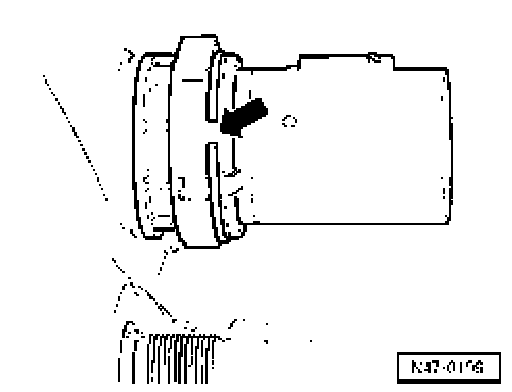

Brake Booster Membrane Position Sensor G420
Brake booster membrane position sensor G420
removing and installing
Removing
- Remove plenum chamber cover
- Pull connector off brake booster membrane position sensor.

- Pry snap ring out of groove - arrow - and remove brake booster membrane position sensor out of brake servo.
Installing
Further installation is in reverse sequence to removal.